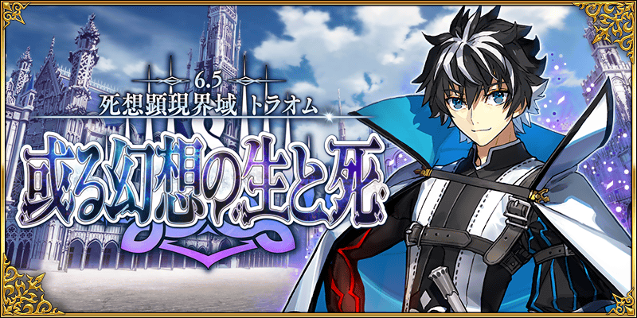
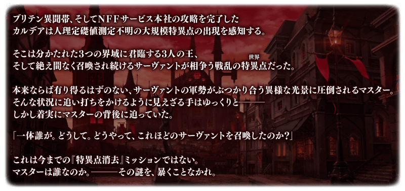
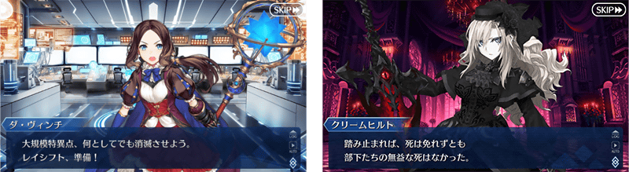
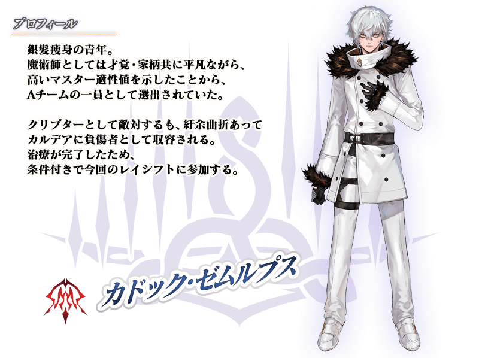
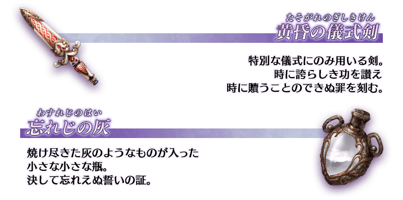

◆第2部 第6.5章「死想顯現界域 如夢似幻 某幻想的生與死」開幕◆
成為「死想顯現界域 如夢似幻 某幻想的生與死」的舞台，是君臨到3個界域的3位王者們率領從者的軍勢而爆發戰爭的大規模特異點。
在交織眾多思想的戰場，御主面對著活躍在黑暗中的巨惡之影！
※本頁面皆為開發中圖片。會有與實際圖片相異的情況。
◆公開時間◆
2022年6月1日(三) 20:30～
◆開放條件◆
通過「非靈長生存圏 通古斯卡聖域」的後記(エピローグ)後開放。
※不需要通過亞種特異點(從Ⅰ到Ⅳ)。
◆關於「死想顯現界域 如夢似幻 某幻想的生與死」的注意◆
・「死想顯現界域 如夢似幻 某幻想的生與死」的文字冒險部份，會登錄到圖鑑(マテリアル)的「於主線故事的記錄」與「於Main Interlude的記錄」雙方。
・通過「死想顯現界域 如夢似幻 某幻想的生與死」的所有主線關卡時，章節看板會移動到管理室(ターミナル)畫面的「Main Interlude」。


由於在「Fate/Grand Order 迦勒底放送局 Vol.18 第2部 第6.5章 某幻想的生與死 開幕前夕SP」達成7萬轉推，實施放送記念登入獎勵！
在下述期間中登入的話，贈送聖晶石12個。
◆領取期間◆
2022年6月2日(四) 3:00～6月9日(四) 2:59
上述期間中，在初次進行登入「Fate/Grand Order」的時間點，贈予至禮物箱。
※期間內未登入的話無法領取。
※禮物只能領取1次。
◆贈送內容◆
聖晶石12個
◆贈送對象◆
2022年6月2日(四) 2:59前通過「特異點F 炎上汙染都市 冬木」的御主對象
※上述時間前，在管理室(ターミナル)畫面的關卡橫幅必須要有「CLEAR」的文字顯示。
在「Fate/Grand Order」官方網站內首頁及Gallery，公開了第2部 第6.5章「死想顯現界域 如夢似幻 某幻想的生與死」的電視廣告。敬請確認。 ※2022年6月2日(四) 17:00～6月30日(四) 11:59的期間中的期間中，在最初起動程式時會播放第2部 第6.5章「死想顯現界域 如夢似幻 某幻想的生與死」的廣告影片。(6月1日(三) 21:20修正時間) ※期間中，第2部 第6.5章「死想顯現界域 如夢似幻 某幻想的生與死」的廣告影片會登錄到個人空間(マイルーム)的圖鑑(マテリアル)，在期間結束後後刪除。
動畫パート製作：A-1 Pictures


在第2部 第6.5章「死想顯現界域 如夢似幻 某幻想的生與死」登場的幾位新從者，在期間限定聖晶石召喚登場！
關於新從者的詳情，請在期間限定聖晶石召喚的公告確認。
幾位第2部 第6.5章「死想顯現界域 如夢似幻 某幻想的生與死」追加2種新道具！
是新登場從者的技能強化及靈基再臨必要的道具。
主要能從在第2部 第6.5章「死想顯現界域 如夢似幻 某幻想的生與死」主線關卡出現的敵人做為戰利品和關卡通過報酬。

2種新道具也預定追加到達文西工房的「純粹稜鏡交換」！
自2022年6月15日(三) 17:00，在達文西工房的「純粹稜鏡交換」的交換對象追加「黄昏的儀式劍」與「勿忘之灰」。
請務必活用在新登場從者的培育吧！
◆交換對象追加時間◆
2022年6月15日(三) 17:00～
其他還有，「如夢似幻 查里曼Pick Up召喚」以期間限定同時舉辦！
關於詳情，請自下述橫幅確認。